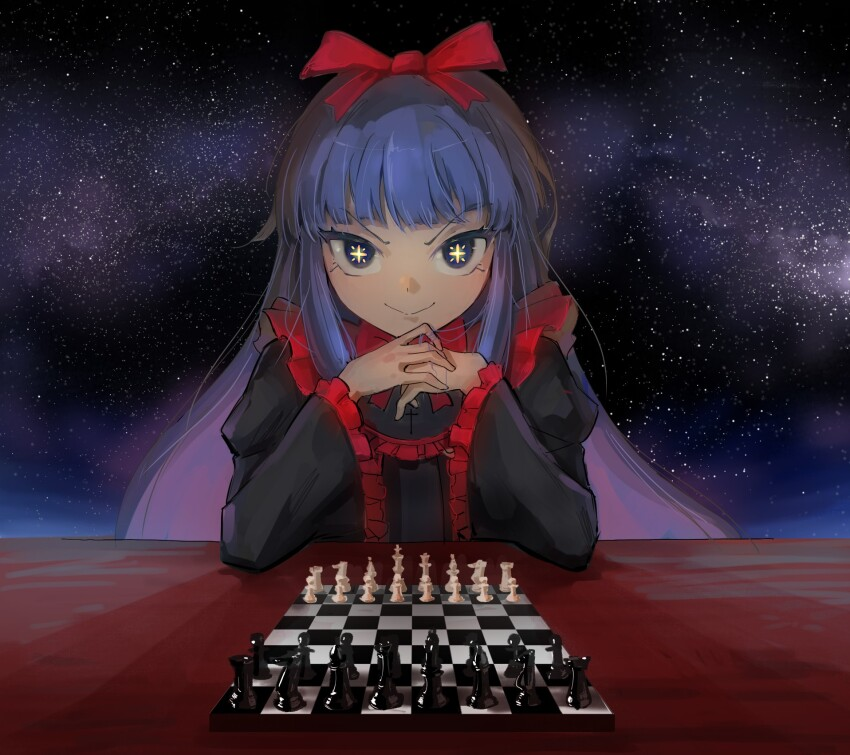
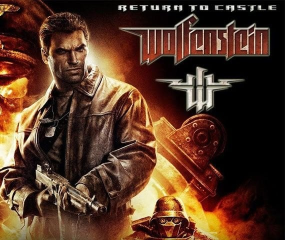
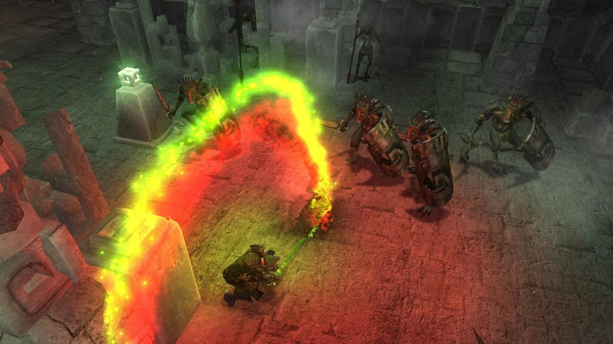
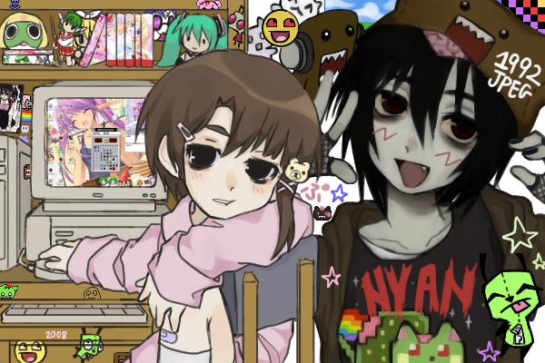
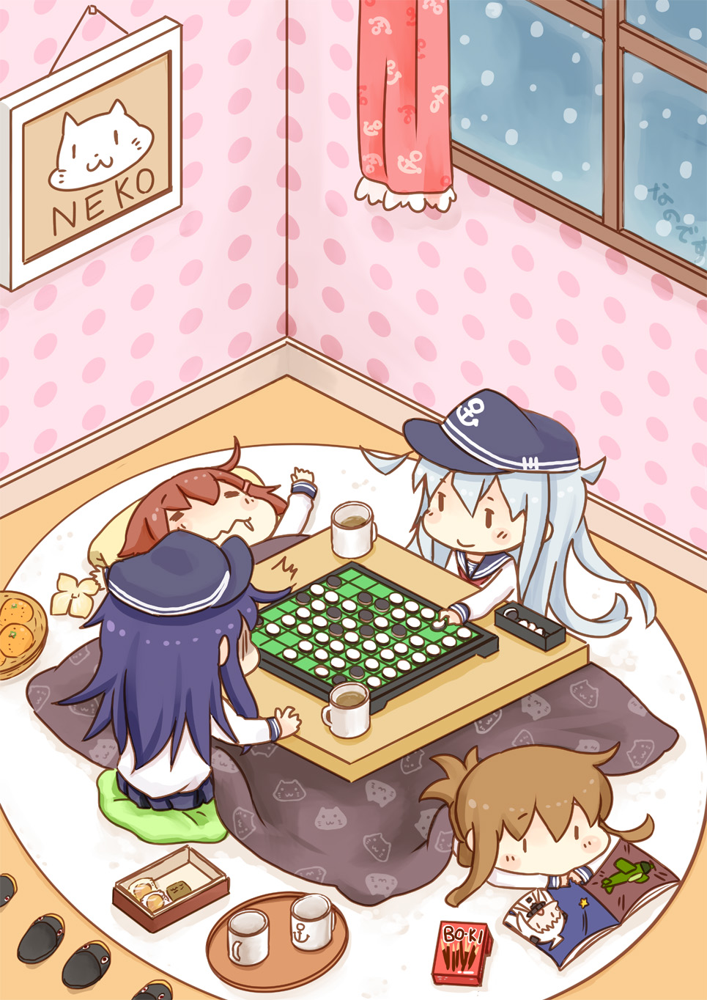

Top games

Chess (wink wink)
Chess is a classical game, and even though I don't play often at all anymore I must admit it's hecking
legendary.
It's amazing how versatile this game is, I mean, 2D board game's charm comes from increasing complexity
from simple rules, but chess' case is is one of the richest, because of it's long history.

Return to Castle Wolfenstein
You get kidnapped and put in a nazi castle, and as you're about to be taken to the doctor to be tortured and get intel extracted from you, you climb to the ceiling of your cell and drop on the guard that came to take you. Shit's on now!1!1!1!
Now you gotta escape castle Wolfenstein and uncover the secrets of the dark magik the nazis are researching in order to win the war, and kill the ancient abominations they're awakening.

Avencast
Nothing breaks the bond between a man and the game he played as a child.
When the game picks up speed, you're gonna have to choose a path of magic and a set of spells to use on the hordes of demons that have breached into this world, in a very wizardy and arcane world.
The gameplay is deficient but the aesthetics of the movies are unmatched, they really do look like old heckin wizards researching magic and technology in their academy, or in other words, it feels real.

Minesweeper
It's also a simple game that gives rise to complexity reaching far beyond it's small set of rules.
You can play "no guess" gamemode to challenge a computer generated board tested for being possible to clear with no reliance on luck, or no guessing.
Chains of logic are prone to occur, and sometimes to know where a mine is you gotta COUNT how many you've already found to know which remaining configurations are possible.
It does not seem like it at all, but skill in this game is all about raw speed, mechanically applying algorithms and logic in order to elegantly dance around the mines.

Othello
This game also has simple rules, and even though I've played less than a dozen games, it's been a lot of fun.
I like it because strategy, at my level, is very simple to see, there's just so many things to take care of at the same time, but the general strategy and a few tactics can be seen on the horizon.
What I've managed to understand is dominating corners and using them to take long lines of pieces.
It feels like trying to keep in equilibrium an unstable system that can fall apart at any moment.
Honestly, it feels even more strategical than chess.
Tetris
I haven't fallen in love with it, and its kinda fun, but not specially my thing.
I guess I just haven't learnt good theory, if I did surely it'd be more fun.
Well, I've still played 20 hours at least.
Genshim Impact
I started playing this game right before Inazuma came out, and stopped a week after Sumeru.
When I first began, it was really fun, the world was unexplored and the experience was adventurous.
But after getting to some mid levels of progress, I was being blocked from progressing further because my team was too weak, because it's a gacha game you gotta gamble to get good characters, and work like it's a job to get the currency to make the pulls without paying actual money for it.
Not only the gacha, but also the farming system is bad, because it requires intensive farming to get materials to level up characters and weapons, which is also a never ending endeavor, ever worse with the fact that materials circulate around the week, meaning that they can only be obtained certain days of the week.
Over all, the gameloop is blatantly abusive, and this is obvioulsy for the purpose of motenization.
It is a shame, and now the adventure factor is gone, now one does missions for the rewards mostly, to keep gambling.
However, if we ignore the user abuse, the game is really good, that's why I would only consider playing it any further as a waling simulator.
The mountains at Liyue are very beautiful, my favorite place in the world is a valley with tall mountains that reach the clouds and have bridges connecting them.
Truly a shame that such a beautiful and well made environment is just the facade of a casino.